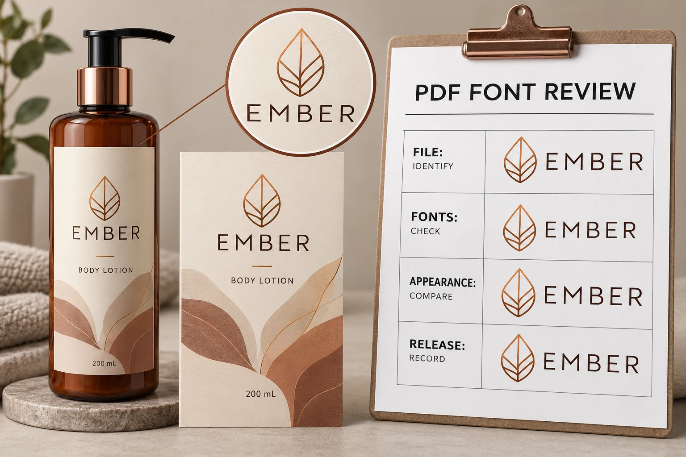

Review the exported PDF, not the source application's memory
Identify the exact file and revision intended for production. Save the reviewed PDF in the release record and distinguish it from the editable source, an email preview and a screenshot used for discussion.
If a correction produces another export, treat that export as the file to check. Do not assume the approval automatically follows because the designer changed only a small phrase. The object being released is a particular file, not a general recollection of how the design should look.
Our cosmetic label reorder guide covers the wider connection between artwork, physical reference and supplier specification. Here the narrower task is checking the font information and visible text within the PDF being handed over.
Understand embedding without treating it as a magic stamp
Adobe's explanation of PDF font handling describes embedding the font data, including either an entire font or a subset of used characters. It also explains that font-vendor permissions can restrict embedding and that substitution may not reproduce the original character shapes.
That supports a practical check: ask the designer or prepress team to inspect font status in the actual PDF, using the relevant document properties or preflight workflow. In Acrobat, the Fonts tab in Document Properties provides information about fonts used in the document.
Do not interpret an embedded subset as automatically incomplete. It can be a legitimate way of carrying the characters used in that file. Conversely, do not treat an unreviewed status message as proof that the brand name, approved copy and small characters are visually correct.
Give important characters an actual reading check
Compare the PDF with the approved reference at the intended label size and at a useful enlarged view. Read the brand name, product and variant names, punctuation, capacity, symbols and any unusual characters in the approved copy.
Look for a difference rather than merely a warning label. Which letter shape changed? Is a symbol missing? Did a line break move? Is the text still the approved wording? Record the location so the designer can investigate the actual issue.
A logo supplied as artwork may need a different review from editable body copy. Do not infer from a matching wordmark that all other text uses the intended font. Likewise, text that has been converted to shapes can require its own visual and workflow checks; its appearance does not establish that it remains editable or searchable text.
This is a print-artwork review, not legal approval of the product wording. The brand's responsible reviewers must approve applicable information separately.
Resolve restrictions with the designer and printer
If a font cannot be embedded under its permitted settings, ask the designer to identify a legitimate production route. That might involve a suitable permitted font, a different export arrangement or an alternative the printer has agreed to accept. Do not instruct a supplier to bypass a font license.
If conversion of text to outlines is proposed, clarify why it is needed, preserve the editable source under the team's control and review the resulting file again. Converting text is not permission to stop checking characters, spacing or dimensions, and it can change how later corrections are made.
The correct solution depends on the file, permissions and receiving workflow. A blanket instruction that every PDF must always be outlined can create avoidable work; a blanket assumption that every font will travel correctly can leave an unresolved handoff.

Record what changed and which file was accepted
Use a concise review record that links the technical observation to the approval. This is an editorial workflow aid, not a software certification.
| Record field | Useful entry |
|---|---|
| File identity | Exact PDF name or controlled reference and revision |
| Font observation | Reported font name and status; who inspected it |
| Visible location | Specific character, line or panel needing comparison |
| Approved reference | The relevant brand artwork or copy reference |
| Correction | What the designer changed and any remaining limitation |
| Re-export | Identifier of the actual corrected PDF checked again |
| Release | Named approver, accepted scope and outstanding issues |
If the printer flags a problem, ask for the specific font, location and reported condition. A request to “fix fonts” is less actionable than a reference to the affected line in a named file. Keep that information with the corrected export so the team does not circulate two equally plausible final PDFs.
Match the review effort to the actual change
Consider two hypothetical projects. One uses an unchanged established PDF, with identifiable prior checks and the same receiving workflow. The team may be able to confirm those records and focus on whether anything relevant changed.
The other introduces a new display typeface or language version. It has a reason to review the affected characters, permission and export arrangement more closely before production release. A prior approval of another language does not establish that every new character is represented correctly.
Neither situation justifies inventing a software error. Investigate the file that actually exists and record whether a concern is present, absent or still unresolved.
Keep fonts separate from the rest of prepress
A font check does not approve bleed, cut paths, ink separations, physical color or applied fit. For boundary preparation, see the bleed, trim and safe-area guide. For the wider sign-off conversation, use the digital proofing guide.
For custom cosmetic labels, send the current PDF, label dimensions, container details, quantity per design and the exact font question that needs review. Use the inquiry form to prepare a message, then send the PDF and relevant references by email or WhatsApp. The form does not upload attachments. Keep the eventual approval attached to the same file the printer acknowledges.